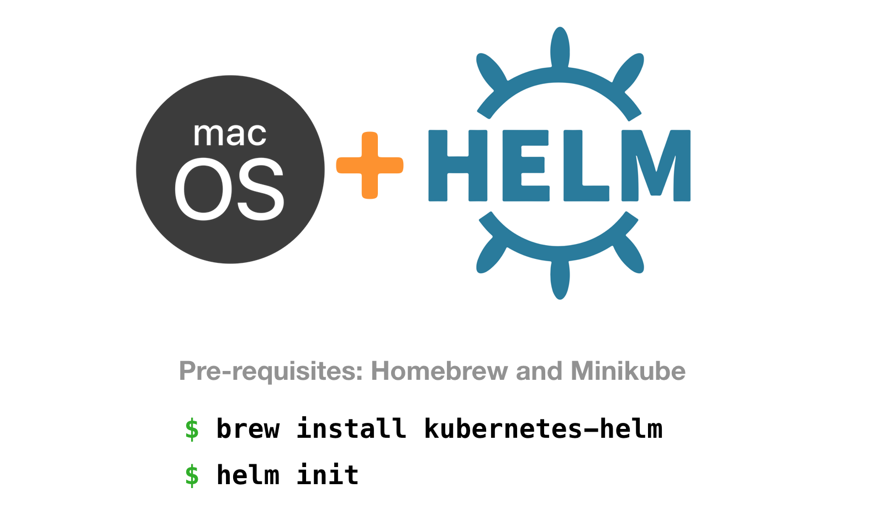

How to Install Helm for Kubernetes on Mac
Here are the steps you need to install and initialize Helm to be used on a Mac running macOS Mojave or High Sierra.

1. Install and start Minikube
Install Minikube on your Mac using our guide.
You can use a different Kubernetes cluster if preferred – anything should work.

2. Install Homebrew
Check that you’ve got Homebrew installed by running brew --version. If you get a Homebrew version number back, you’re good to go.
If you don’t have Homebrew, run this in your Terminal
/usr/bin/ruby -e "$(curl -fsSL https://raw.githubusercontent.com/Homebrew/install/master/install)"
3. Install Helm with Homebrew
Run the following Homebrew command to install Helm on your local macOS operating system.
brew install kubernetes-helm
4. Initialize Helm
The last step is to initialize the Helm command-line tool and install the Helm server (Tiller) onto your Kubernetes cluster (Minikube, in our case).
Run helm init and you’ll see something like the following.
$ helm init
Creating /Users/matthewpalmer/.helm
Creating /Users/matthewpalmer/.helm/repository
Creating /Users/matthewpalmer/.helm/repository/cache
Creating /Users/matthewpalmer/.helm/repository/local
Creating /Users/matthewpalmer/.helm/plugins
Creating /Users/matthewpalmer/.helm/starters
Creating /Users/matthewpalmer/.helm/cache/archive
Creating /Users/matthewpalmer/.helm/repository/repositories.yaml
Adding stable repo with URL: https://kubernetes-charts.storage.googleapis.com
Adding local repo with URL: http://127.0.0.1:8879/charts
$HELM_HOME has been configured at /Users/matthewpalmer/.helm.
Tiller (the Helm server-side component) has been installed into your Kubernetes Cluster.
Please note: by default, Tiller is deployed with an insecure 'allow unauthenticated users' policy.
To prevent this, run `helm init` with the --tiller-tls-verify flag.
For more information on securing your installation see: https://docs.helm.sh/using_helm/#securing-your-helm-installation
Happy Helming!Done! You’ve successfully installed Helm on your Mac.
You can now use Helm to easily package and deploy your Kubernetes applications. You’ll get simple rollbacks and great release management.